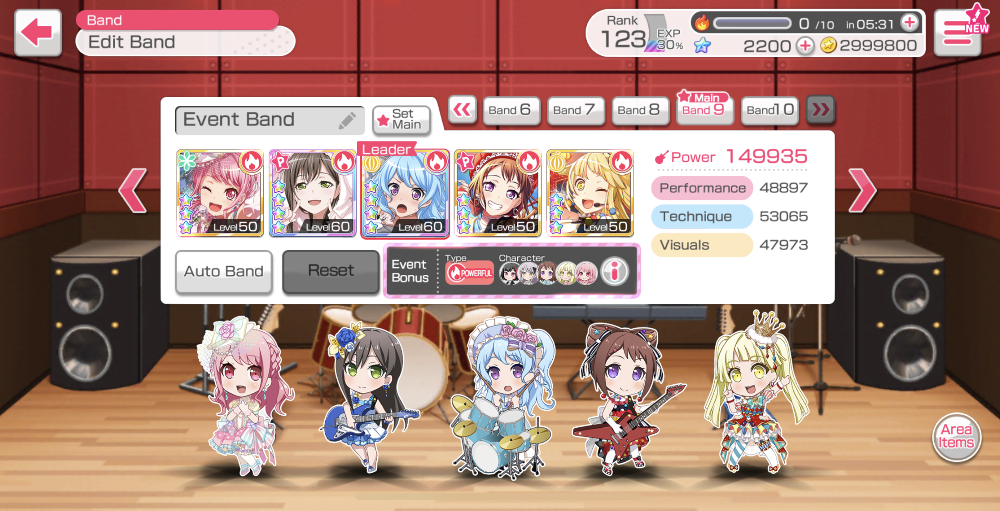

BanG Dream (or Bandori) is a Japanese multimedia franchise under Bushiroad Inc. Its concept is about all-female bands whose in-real life members
are not only voice actresses but also performers. In the present (2021), there are 7 bands with 5 members each, namely: Poppin' Party, Afterglow, Pastel*Palettes,
Roselia, Hello Happy World!, Morfonica, and RAISE A SUILEN, with the former 5 being the original bands and the other 2 introduced in 2020. Out of the 7 bands, 4
are capable of playing their characters' respective instruments and perform live onstage.
The project was created by Kidani Takaani, the founder and president of Bushiroad, and started as a manga in 2015 with the original story written by Nakamura Kou.
Throughout the years, it expanded to other media.
Its anime, also titled as "BanG Dream!", currently consists of 3 seasons which first aired on January 21, 2017. There
is also a spin-off called "Pastel Life" which features Pastel*Palettes and a mini-anime called "GARUPA☆PICO" featuring the characters' chibi versions with its 3rd season
("GARUPA☆PICO! Fever!") currently airing (as of October 2021).
The mobile rhythm game called "BanG Dream! Girls Band Party" was published by Bushiroad and Craft Egg Inc. On March 2017, it was introduced to iOS and Android platforms in Japan.
The Taiwanese and Korean versions soon followed on Sept. 2017 and Feb. 2018 which were published by Mobimon Inc. and Kakao Games respectively. The English version was then
released on April 2018, followed by the Chinese version on May 2019. On Sept. 2021, the Nintendo Switch version was released which made the game playable to a new platform.

In the game, you can play different levels of songs (Easy, Normal, Hard, Expert, Special) from different bands. An option whether to play solo or multi live with other players is present.
You can also download and read the stories of each band and learn how they all came together.
There is also a gacha where you can use your stars to obtain the cards of your favorite band and/or characters. Level up these cards and use area items to form
a powerful band. The game never runs out of content for there are new events weekly.
Every week, there is a live broadcast on the Official Bandori JP YouTube Channel called "Bandori! TV Live". It is always aired on Thursday 22:00 JST. The first episode of TV Live aired
on January 23, 2020 which was hosted by Itou Ayasa (VA of Ichigaya Arisa), Aiba Aina (VA of Minato Yukina), Raychell (VA of Wakana Rei), and Kohara Riko (VA of Asahi Rokka).
The show has different segments with the hosts changing each week. The hosts (voice actresses), in some cases with the staff, deliver news to the audience related to
the activities, details, and programs of the franchise as well as product and merchandise information.